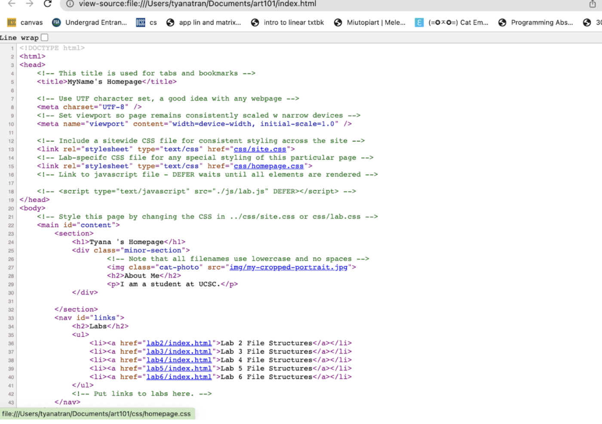

Lab 3 - File Structure and File Transfer
This lab was to further create and edit local file structures then ensure they appeared correctly in the browser.
Challenge
I had some difficulty editting the index.html files at first, but after some practice, I am more comfortable.
Problems
I had some problems organizing my labs. However, my partner was able to clarify the syntax I was unfamiliar with.
Reflection
Overall, the assignment went well. My partner was very helpful throughout, and I was able to solidify some of my basic understandings of html.
Results
These are screenshots of my file structures and my source codes from art101/index.html and art101/lab3/index.html as they appear in my browser.
This is my file structure from VS code.
This is the source code of art101/index.html.
this is the source code of art101/lab3/index.html.